ロボットアーム入門
~ ロボットの基本操作 ~
大阪大学 中島優作
このスライドの担当範囲
- こちらのスライドでロボットが動く状態になった前提で、ロボットをどう動かしていくのかを扱います。
- コードなどはUniversalRobotの例を扱います(他のメーカーでも概ね同じ機能があるはずです)。
オススメ参考資料
このスライドは数式を省いて実際のロボットでの説明を重視しています。数式がしっかり載っている教科書との併用すると理解が深まるのでおススメします。
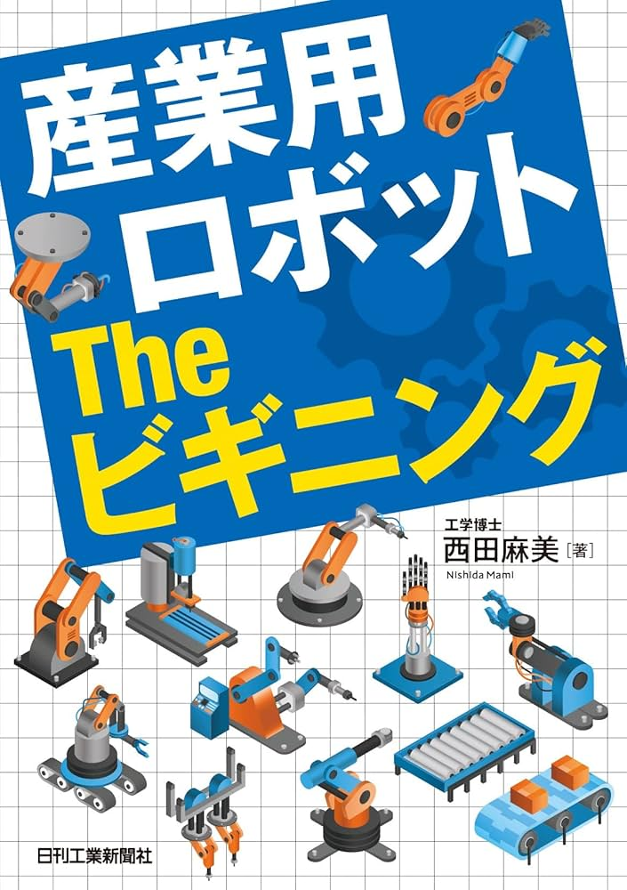
産業用ロボットtheビギニング - 産業用ロボットの基礎的な情報を網羅

イラストで学ぶロボット工学 - ロボットアームの初歩を網羅しつつも、数式もでくるので本格的。
最も基本の位置制御まで扱っている
ロボット動作の方法
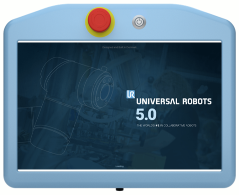
ティーチングペンダント
- 各種設定や動作を記録、再生
- 最近はLANを介してソフトウェアで行うものも多い

プログラミング
- Python等で動作コードを作成
- TPでは対応していない機能が使える
動作作成の基本手順
動作作成の基本手順
- TCPの設定
- 座標系の指定
- モーション種類の決定
- 実行・テスト
アプリを開いてください
→ 全画面表示
この後の説明はアプリを見ながら行います
ステップ①TCP(アームの手先)
TCP = Tool Center Point,複数登録して使うのが便利
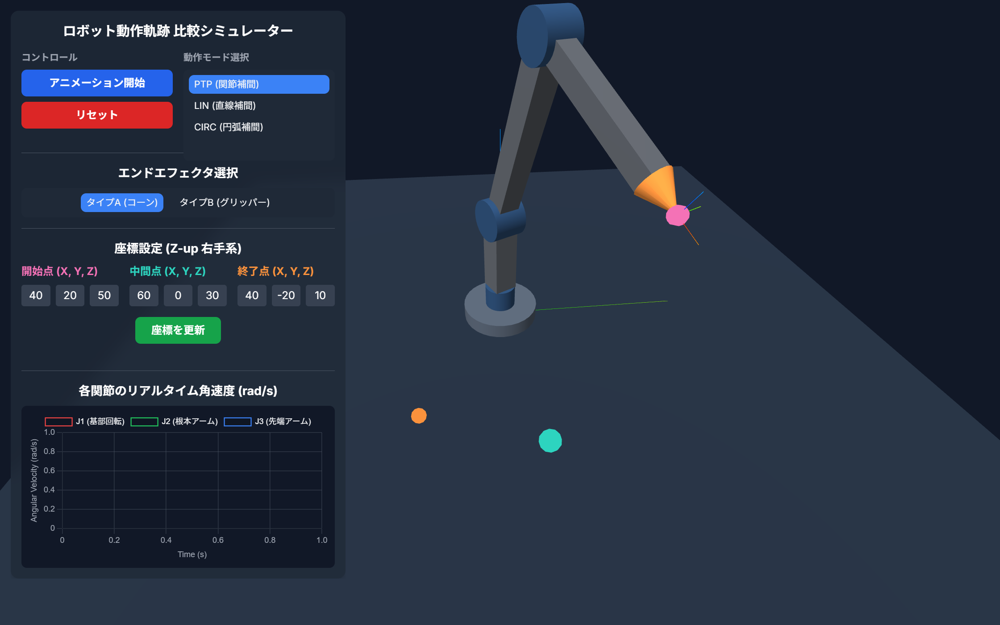
TCPは先端
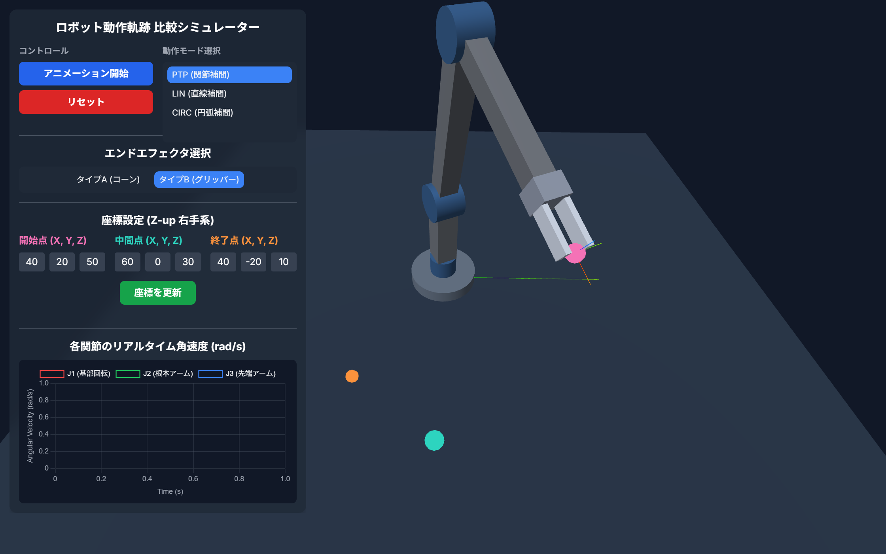
TCPはグリッパの中央
TCPの座標系の表現↓
TCPの姿勢表現
姿勢(pose) = 位置 + 向きで表すことが多い
基本はXYZの座標系に対する位置と向きを考える
→ 全画面表示
ステップ②ロボットの座標系

関節座標系
関節それぞれの角度を指定
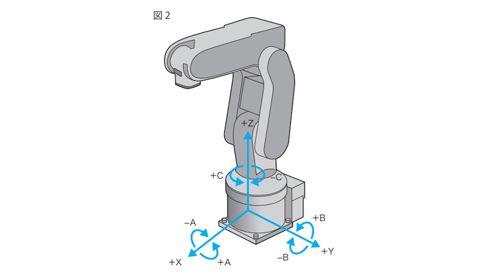
ベース座標系
ロボットの根本を基準にTCPの座標を指定
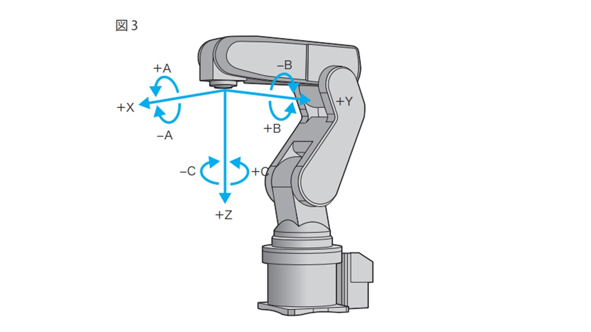
ツール座標系
現在のTCPの座標系を基準に次のTCPの座標系を指定
座標系による動きの違いを確認↓
ジョグ動作

- 関節や手先を少しずつ動かす動作をジョグ動作という
- アプリのジョグ機能を使うと、関節座標系、ベース座標系、ツール座標系での動きの違いが確認できる
ステップ③ロボットモーションは3種類
詳細は以下↓
PTPの詳細
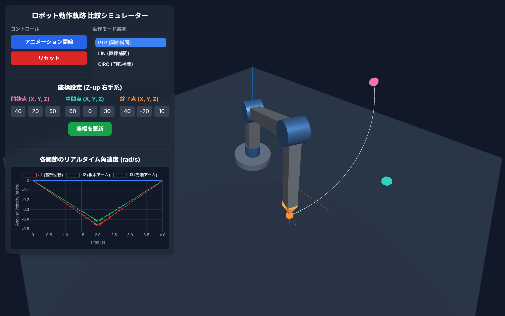
- 関節空間での最短経路
- 各関節が最も速く目標に到達するように動く(グラフ)
- 手先の軌道は予測できない
- 障害物がない環境で使用する動作モード
LINの詳細
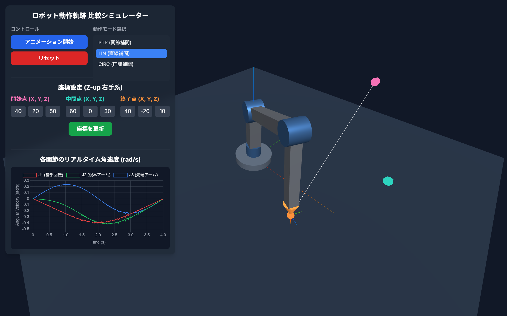
- 直線動作
- 手先が直線的に移動
- 関節の可動範囲や特異点により動きに制限
- 部品挿入や溶接で使用
- PTPよりも時間がかかる
CIRCの詳細
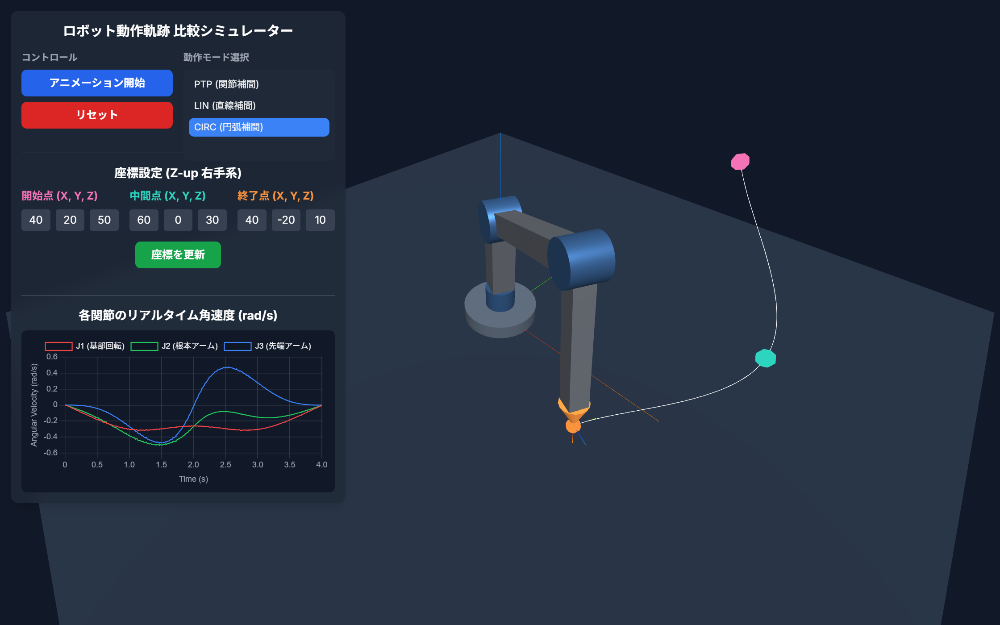
- 円弧動作
- 中間点を指定して円弧を描く
- 障害物回避や滑らかな動作で使用
- 角を持つ物体の加工などに有効
- 3点（始点・中間点・終点）が必要
連続的なロボットモーション
→ 全画面表示
- 複数の姿勢(waypoints)を指定
- ただし、通常は各点で停止する動作のため、動きがガタつく
ガタツキの少ないモーションを作りたい場合↓
滑らかなモーションの作り方
→ 全画面表示
- waypointsをショートカットし滑らかな動作を実現
- 振動が抑えられる
- メーカーごとにこの機能の呼び方は異なる
- Denso:パス動作
- UR:ブレンド半径
プログラムの組み方(URの例)
→ 全画面表示
- これまで習った内容をプログラムで組むときの例です
ガタツキの少ないモーションを作りたい場合↓
プログラムから動かす場合
URはRTDEを使って外部制御が可能で、Ur_rtdeをpipでインストール可能
例のように、目標の座標とモーションの種類を指定して動作可能
- PTP = moveJ
- LIN = moveL
- CIRC = moveC
import rtde_control
import rtde_receive
import time
robot_ip = "URロボットのIPアドレス"
rtde_c = rtde_control.RTDEControlInterface(robot_ip)
rtde_r = rtde_receive.RTDEReceiveInterface(robot_ip)
try:
# PTP動作 (関節空間)
# 関節角度をラジアンで指定
target_joints = [0.1, -1.2, 2.3, -1.5, 0.5, 0.0] #ラジアン表記
rtde_c.moveJ(target_joints, 1.0, 0.5) # 速度1.0rad/s, 加速度0.5rad/s^2
time.sleep(5)
# LIN動作 (ベース座標系)
# ベース座標系での目標TCP位置を指定, [x, y, z, rx, ry, rz] (単位: [m, rad])
target_pose_base = [0.3, 0.4, 0.5, 0.0, 0.0, 0.0]
rtde_c.moveL(target_pose_base, 0.5, 0.3) # 速度0.5m/s, 加速度0.3m/s^2
time.sleep(5)
# CIRC動作 (ツール座標系)
# ツール座標系での中間点と目標点のTCP位置を指定, [x, y, z, rx, ry, rz] (単位: [m, rad])
via_pose_tool = [0.1, 0.1, 0.0, 0.0, 0.0, 0.0]
to_pose_tool = [0.2, 0.0, 0.0, 0.0, 0.0, 0.0]
rtde_c.moveC(via_pose_tool, to_pose_tool, 0.5, 0.3, pose_tool=True) # 速度0.5m/s, 加速度0.3m/s^2
time.sleep(5)
finally:
rtde_r.disconnect()
安全確認してから実行してください
位置制御だけではタスク達成が難しい場合
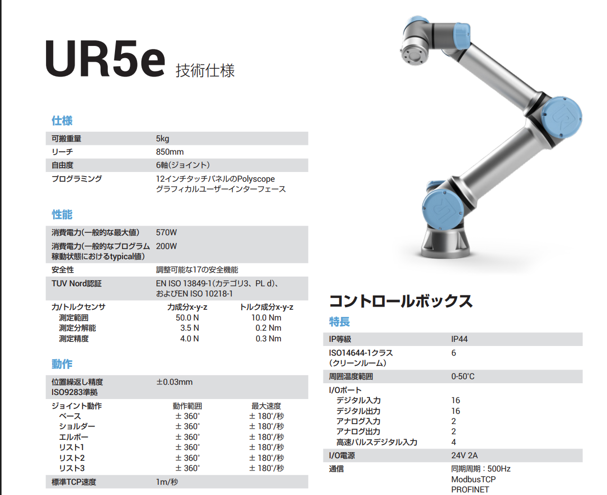
- 部品を嵌め合わせるなどの作業は力を制御すると簡単にできます
- よく使われる手法を紹介します
柔軟な手先：RCC
- 部品を嵌め合わせるなどの作業は、ロボットの精度の限界で位置制御だけではうまくはめられない場合があります
- 手先を柔らかくするRCCが有効です
フォース制御
- 任意の軸だけ位置制御/力制御と切り替える機能
- 研磨など任意の方向に一定の力をかけ続けて動かすことができます
コンプライアンス制御
- 多くのロボットには任意の軸だけ位置制御/力制御と切り替える機能があります
- 手先にフォーストルクセンサを追加する必要があります
ロボットアームの精度について
- 仕様書は絶対位置決め精度ではない！
- ISO9283は同じ動作の繰り返し精度を測定する
- 例えば、電源を入れなおすと絶対位置は前回とずれる
オフラインシミュレーション
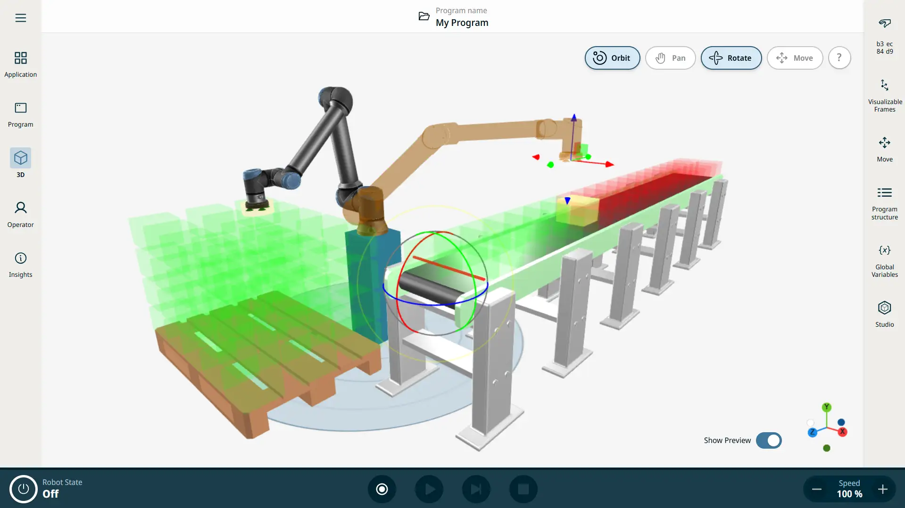
- オフライン(実機なし)のシミュレーション
- 動作前の事前検討が可能
シミュレーションはなぜ重要か↓
シミュレーションを使わなかった場合にありがちなトラブル
- 1. レイアウト設計
実際に設置するとロボットの可動範囲が思ったより狭く手先が届かなかった→配置の再検討 - 2. 動作速度
スループットの向上を期待したが実際に動かすと思ったより遅かった
シミュレーションで未然に防げる
シミュレーションの現状
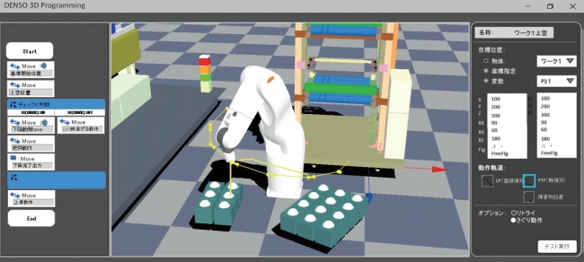
産業用ロボット
- 自社で提供
- 動作プログラムの作成・検証が可能
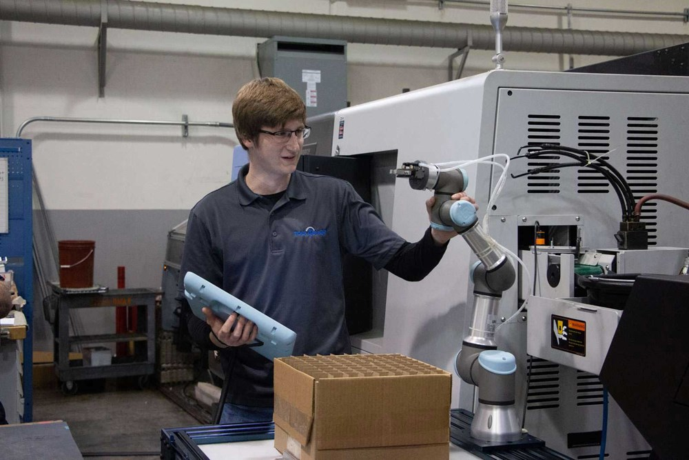
協働ロボット
- 直接ティーチング
- 動かすまで分からない
※UniversalRobotはUR Studioが利用可能
協働ロボシミュレータの選択肢
- 個人的にはカナダのRoboDKがおススメ
- 色々なロボットに使える、直観的なGUI操作
- CADのエッジからウェイポイント自動作成など便利機能あり
UR Tips
- Universal robotを使う上での便利機能の紹介
- 主にシミュレータとモーションの話
シミュレータ UR Studio
- オンライン、無料で使える
- 機能はRoboDKの方が上だが、これで十分な場合も多いのでは
モーション ver2
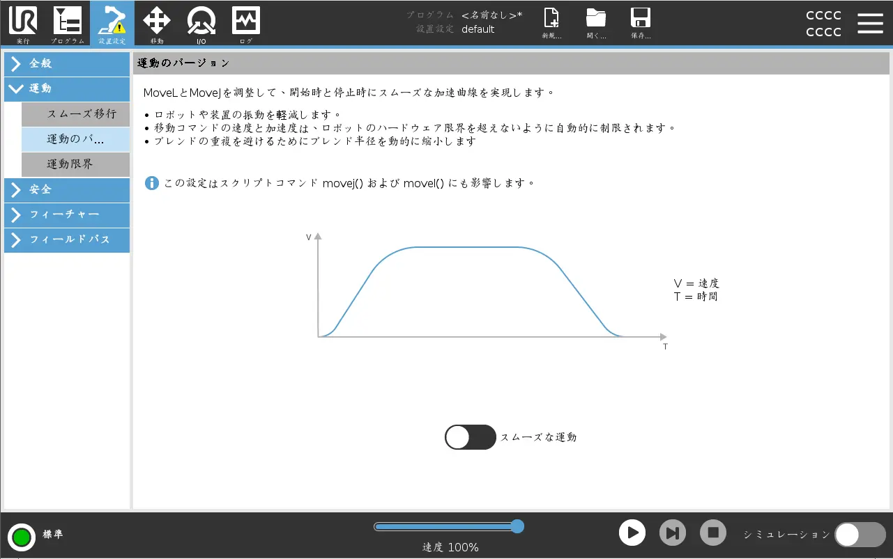
- Polyscope ver5.22から使えるように(今後はこれが標準)
- MoveJ(PTP),MoveL(LIN)ので振動が少なくなる
- 速度と加速度が滑らかに
- ブレンド半径が大きすぎる場合は自動調整
フォースモード
- 特定の軸だけ力制御と位置制御を切り替え可能
- 個人的にかなり制御の組み方がうまいと思うので便利です
- 例えば、Z軸は力制御で一定力で押し付けて、位置制御で動かす等で使う
ROSを使う？使わない？

メーカー提供の動作生成

- 直線などの動きの組合せで十分
ROSでもシミュレーションできるのでは？
- ROSでも可能だが、目的に応じた使い分けが重要
- 位置制御 → RoboDK
- 精密な軌道制御 → ROS
ロボットアーム選定
ロボットアームの選び方
ここでは協働ロボットを対象にしています
ロボットアームの軸の数
位置(3次元) + 向き(3次元) → 姿勢(6次元) = 6軸が必要

4軸ロボットの例
常に下向きという制限

6軸ロボットの例
位置も向き自由
ざっくり４種類
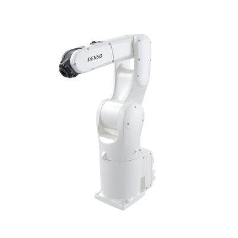
産業用ロボット
高精度・高信頼性
400万円〜

協働ロボット
人との協働・安全
300万円〜
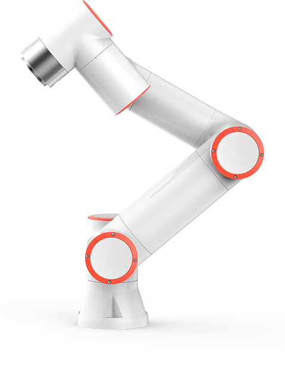
格安ロボット
コスト重視
50万円〜

教育用ロボット
学習・原理理解
10万円〜
産業用ロボット
特徴
- FANUC、Yaskawa、Kawasaki、Denso
- 高精度・高速・高信頼性
- 製造業での実績豊富
- 専用コントローラ
- メンテナンス体制充実
協働ロボット
特徴
- UR、Franka Emika、DOBOT
- 人との協働作業が可能
- 安全機能内蔵
- 直感的なプログラミング
- 柔軟な外部制御
- ROSとの親和性
格安ロボット
特徴
- DOBOT、xArm、FairInovation
- コストパフォーマンス重視
- 基本機能は十分
- Python制御対応
- 簡単なタスクに最適
- サポート体制は限定的
教育用ロボット
特徴
- 学習・研究用途
- 組み立てから学習可能なものもある
- 低コスト
- Python・Scratch対応
- 原理理解に最適
本スライドのアプリ一覧
講義中に使用したインタラクティブアプリケーション
以上でロボットの基本動作はできるはず
Let's enjoy robot!
もっと複雑な制御やセンサの統合をやりたい方は：
- ゼロからのROS入門 - ROSの基礎概念と学習リソース
- アーム位置制御とモーションプランニング - MoveItとJTCによる制御実装
- シミュレータや実機との接続 - ros_controlとBringupパッケージ